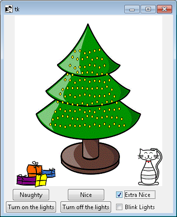

Sure, there are perl APIs that bind QT, Win32, Gtk, and other GUI APIs but Tk is the classic and in many minds the default option for writing GUI code in Perl. Unfortunately, if you must implement a GUI for one of your applications the prospect of using Tcl::Tk is about as exciting as receiving a lump of coal in your stocking. The problem is that Perl/Tk was designed to circumvent Tk's natural Tcl interface, and Tcl::Tk took over the maintenance of this design. At its core is a modified version of Tk which few to none of the elves at Santa's toy factory want to maintain—the poor little guys run in terror at the prospect! So, while Tk has continued to evolve Perl is still bound to a fairly rusty version of Tk. ActiveState's solution to this is to implement a Perl-Tcl wrapper to Tk called Tkx. The goal of Tkx is to provide a clean and maintainable interface to the Tk widget set that can be used for many Christmases to come1. Tkx is really little more than a wrapper that translates perl to Tcl and then invokes a Tcl interpreter. This however, allows us to take full advantage of every modern feature of Tcl/Tk. Huzzah! Our Tk interface no longer look as if it was written in 1995!
Since we are wrapping Tcl code syntax may seem a bit odd at first. Since Tkx is such a massive API we'll proceed immediately to an example that tries to pack in as many routines as possible.
Of particular interest are calls like new_ttk_checkbutton. This is the Tkx analog of Tcl's ttk::checkbutton; constructors always begin with new_. In general this style of naming is used for Tcl commands in Perl, with underscores representing spaces and colons.
In addition, g_ methods like g_grid invoke the corresponding Tk command with the widget path as an argument, which we use to assign the button to its place in the grid layout. Besides object paths we can use unique widget IDs—returned by their creators—or "tags"2 to easily identify and modify behavior of objects drawn on the canvas. For example, in the blink_switch() sub on lines 94-112 we pass in an array of IDs representing the lights. It is these that are used by the canvas's itemconfigure function to toggle the lights when blinking is enabled.
On lines 90–91 we engage in a little trick to get a simple "blink" animation. The blink_lights() sub calls a hand made repeat function which mimics the Tk APIs Tk::Repeat; which is itself just a convenience wrapper around Tk::After. Essentially we are creating a thread that runs in the background and if our $do_blink variable is set by $checkbox_blink then we blink the lights.

For more advanced usages you need to look at the Tcl/Tk docs directly and then craft the appropriate Tkx call. Activestate'stutorials shows some of examples of this. Tkdocs also has a ton of great info on Tk functions.
If Perl segfaults when you try to use Tcl try the following before rebuilding it: perl Makefile.PL --nousestubs
1 # A fun little Christmas themed Tkx app. 2 # Adam Russell ac.russell@live.com 3 use Tkx; 4 5 my $main_window = Tkx::widget->new("."); 6 perl_advent_ui($main_window); 7 &Tkx::MainLoop(); 8 9 #Layout the ui. This sort of thing is generally easier in a RAD tool 10 #like specTcl or ZooZ but our layout is straightforward enough 11 sub perl_advent_ui { 12 my ($root) = @_; 13 my $extra_nice_selected=0; 14 my $do_blink=0; 15 my $canvas = $root->new_tk__canvas(-width => 340, -height => 350); 16 17 # All images from www.openclipart.org 18 # christmas tree: www.openclipart.org/detail/15032 19 # presents : www.openclipart.org/detail/98539 20 # cat : www.openclipart.org/detail/33241 21 my $presents_image=Tkx::image_create_photo(-file => "xmas-presents_0.gif"); 22 my $presents_tag="presents"; 23 my $kitten_image=Tkx::image_create_photo("kitten", -file => "kitten_0.gif"); 24 my $kitten_tag="kitten"; 25 my $tree_image=Tkx::image_create_photo(-file => "tree_0.gif"); 26 my $tree_tag="tree"; 27 $canvas->create_image([172,175],-image => $tree_image, -tag=>$tree_tag); 28 my @lights=string_lights(\$canvas); 29 30 my $checkbox_blink=$root->new_ttk__checkbutton(-text => "Blink Lights", 31 -variable => \$do_blink, -onvalue => 1, -offvalue => 0); 32 my $checkbox_xnice = $root->new_ttk__checkbutton(-text => "Extra Nice ", -command => sub{extra_nice(\$canvas,\$extra_nice_selected,\$kitten_image,$kitten_tag)}, 33 -variable => \$extra_nice_selected, -onvalue => 1, -offvalue => 0); 34 my $button_lights = $root->new_ttk__button(-text => "Turn on the lights", -command => sub {turn_on_lights(\$canvas,\$checkbox_blink,\$do_blink,@lights);}); 35 my $button_nolights = $root->new_ttk__button(-text => "Turn off the lights", -command => sub {turn_off_lights(\$canvas,\$checkbox_blink,\$do_blink,@lights);}); 36 my $button_naughty = $root->new_ttk__button(-text => "Naughty", -command => sub{naughty(\$canvas,\$checkbox_xnice,\$extra_nice_selected,$presents_tag,$kitten_tag);}); 37 my $button_nice = $root->new_ttk__button(-text => "Nice", -command => sub{nice(\$canvas,\$checkbox_xnice,\$presents_image,$presents_tag);}); 38 39 my $row_start = 1; 40 $canvas->g_grid(-column => 0, -row => 0, -columnspan => 7, -rowspan => $row_start); 41 42 $button_naughty->g_grid(-column => 0, -row => $row_start+1, -columnspan => 1); 43 $button_nice->g_grid(-column => 1, -row => $row_start+1, -columnspan => 1); 44 $checkbox_xnice->g_grid(-column => 2, -row => $row_start+1, -columnspan => 1); 45 $checkbox_xnice->state("disabled"); 46 47 $button_lights->g_grid(-column => 0, -row => $row_start+3, -columnspan => 1); 48 $button_nolights->g_grid(-column => 1, -row => $row_start+3, -columnspan => 1); 49 $checkbox_blink->g_grid(-column => 2, -row => $row_start+3, -columnspan => 1); 50 $checkbox_blink->state("disabled"); 51 turn_off_lights(\$canvas,\$checkbox_blink,\$do_blink,@lights); 52 blink_lights(\$canvas,\$do_blink,@lights); 53 } 54 55 sub string_lights{ 56 my($canvas)=@_; 57 my @light_ids; 58 my ($x_top_left,$y_top_left,$x_bottom_right,$y_bottom_right)=(142.00,68.00,146.00,74.00); 59 foreach my $row_index (0..10){ 60 foreach my $light_index (0..10+($row_index-5)){ 61 my $scatter=rand(7); 62 $light_index=$light_index*10; 63 my $light=$$canvas->create_oval($x_top_left+$light_index,$y_top_left+$scatter,$x_bottom_right+$light_index,$y_bottom_right+$scatter, -fill => "yellow", -tags => "palette palettered"); 64 unshift @light_ids, $light; 65 } 66 ($x_top_left,$y_top_left,$x_bottom_right,$y_bottom_right)=($x_top_left-5,$y_top_left+15,$x_bottom_right-5,$y_bottom_right+15) 67 } 68 return @light_ids; 69 } 70 71 sub turn_on_lights(){ 72 my($canvas,$checkbox,$checkbox_selected,@lights)=@_; 73 foreach my $light_id (@lights){ 74 $$canvas->itemconfigure($light_id, -state => "normal"); 75 } 76 $$checkbox->state("!disabled"); 77 $$checkbox_selected=0; 78 } 79 80 sub turn_off_lights(){ 81 my($canvas,$checkbox,$checkbox_selected,@lights)=@_; 82 foreach my $light_id (@lights){ 83 $$canvas->itemconfigure($light_id, -state => "hidden"); 84 } 85 $$checkbox->state("disabled"); 86 $$checkbox_selected=0; 87 } 88 89 sub blink_lights{ 90 my($canvas,$do_blink,@lights)=@_; 91 repeat(1000,sub{blink_switch($canvas,$do_blink,@lights)}); 92 } 93 94 sub blink_switch{ 95 my($canvas,$do_blink,@lights)=@_; 96 my @lights_off; 97 my $random_off_switch; 98 if($$do_blink){ 99 foreach my $light_id (@lights){ 100 $random_off_switch=(rand()<.5); 101 if($random_off_switch){ 102 $$canvas->itemconfigure($light_id, -state => "hidden"); 103 unshift @lights_off, $light_id; 104 } 105 } 106 Tkx::update(); 107 Tkx::after(500); 108 foreach my $off_light_id (@lights_off){ 109 $$canvas->itemconfigure($off_light_id, -state => "normal"); 110 } 111 Tkx::update(); 112 } 113 } 114 115 sub naughty{ 116 my($canvas,$checkbox,$checkbox_selected,$presents_tag,$kitten_tag)=@_; 117 $$canvas->delete($presents_tag); 118 $$canvas->delete($kitten_tag); 119 $$checkbox->state("disabled"); 120 $$checkbox_selected=0; 121 } 122 123 sub nice{ 124 my($canvas,$checkbox,$presents,$tag)=@_; 125 $$canvas->create_image([65,325],-image => $$presents, -tag=>$tag); 126 $$checkbox->state("!disabled"); 127 } 128 129 sub extra_nice{ 130 my($canvas,$extra_nice_selected,$kitten,$tag)=@_; 131 if($$extra_nice_selected){ 132 $$canvas->create_image([297,310],-image => $$kitten, -tag=>$tag); 133 } 134 else{ 135 $$canvas->delete($tag); 136 } 137 } 138 139 # Implementation of a function like Perl/Tk's repeat 140 # from http://www.nntp.perl.org/group/perl.tcltk/2010/02/msg381.html 141 # for additional discussion see http://www.perlmonks.org/index.pl?node_id=728516 142 sub repeat{ 143 my $ms = shift; 144 my $sub = shift; 145 my $repeater; # repeat wrapper 146 $repeater = sub { $sub->(@_); Tkx::after($ms, $repeater);}; 147 my $repeat_id=Tkx::after($ms, $repeater); 148 return $repeat_id; 149 }
1. Info about Tkx straight from the horse's mouth.